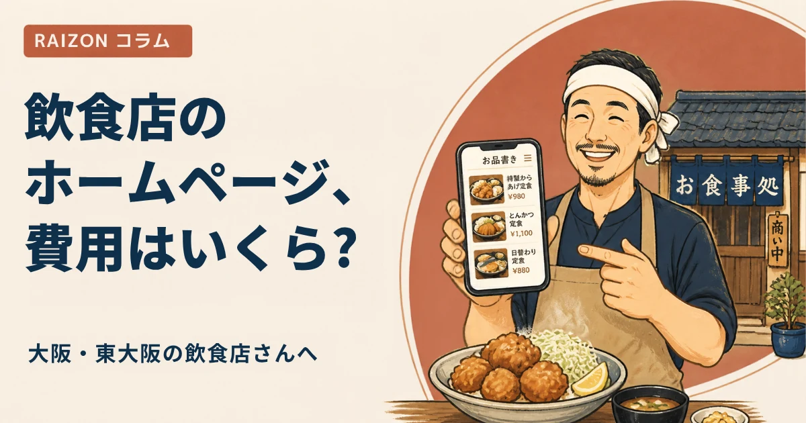

大阪・東大阪の飲食店ホームページ制作｜費用の目安と食べログ・SNSとの使い分け

大阪や東大阪で飲食店を開く、あるいは続けていると、「ホームページは作った方がいい？」「食べログやInstagramがあれば十分では？」と迷う方は多いと思います。結論から言うと、ポータルサイトやSNSは「見つけてもらう場所」、ホームページは「お店の情報をいちばん正確に伝える場所」です。この記事では、飲食店のホームページ制作にかかる費用の目安と、他のサービスとの使い分け、制作会社に頼むときの確認項目をまとめます。
- 費用は「最初に払う制作費」と「毎月・毎年かかる費用」に分けて見る
- 食べログ・Googleマップ・Instagram・ホームページは、役割がちがう。どれか1つに絞るより、使い分ける
- 飲食店は、メニュー・営業時間・地図・予約方法が、最新で正確に載っているかが大事
- 見積もりでは、サーバー・ドメイン・更新（メニューやお知らせの変更）が含まれるかを必ず確認する
飲食店のホームページ制作にかかる費用の目安
費用は、ページ数や機能、制作会社によって大きく変わります。ここでは、考え方の目安として、3つのタイプに分けて整理します。
| タイプ | 最初に払う費用 | 毎月・毎年の費用 | 向いているお店 |
|---|---|---|---|
| 買い切り型（制作会社に依頼） | 数十万円になることが多い | サーバー代・ドメイン代など。更新は別料金のことも | メニューをあまり変えない、最初にまとまった予算があるお店 |
| 月額制（サブスク） | 0円〜数万円 | 月額の利用料（更新込みのことも） | 開業直後で予算を抑えたい、メニューや営業時間をよく変えるお店 |
| 自分で作る | ほぼ0円 | ツールの利用料（月1,000円前後〜） | 時間があり、更新も自分でできるお店 |
金額はあくまで目安です。実際には、複数の会社で見積もりをとって、含まれる内容を比べてください。費用の考え方は、東大阪のホームページ制作の費用相場や、月額制と買い切りの選び方でも詳しく書いています。
食べログ・Googleマップ・Instagramと、ホームページの使い分け
「ホームページがなくても、ほかで見つけてもらえているから大丈夫」という声もよく聞きます。たしかに、見つけてもらう入口は、ひとつではありません。それぞれの役割を、整理してみましょう。
| 場所 | 得意なこと | 苦手なこと |
|---|---|---|
| Googleマップ（ビジネスプロフィール） | 「近くの飲食店」を探す人に見つけてもらう。営業時間・口コミ・写真 | お店のこだわりや、細かいメニューの説明を伝えきれない |
| 食べログなどのグルメサイト | お店を比べて選びたい人に見てもらう | 掲載内容や表示のしかたを、お店が自由に決めにくい |
| 写真や日々の様子で、お店の雰囲気を伝える。気軽に更新できる | 情報が流れやすく、メニューや営業時間を探しにくい | |
| ホームページ | メニュー・営業時間・場所・こだわりを、正確に、自分の言葉でまとめて伝える | 自分から見つけてもらうには、ほかの入口とつなげる工夫が必要 |
おすすめの考え方は、「ホームページを、ほかの入口の行き先にする」ことです。Googleマップで見つけた人が、メニューや定休日を確かめるためにホームページを開く。Instagramで気になった人が、プロフィールのリンクからホームページに来る。そう流れをつくると、それぞれの良いところを活かせます。Googleマップとの関係は、ホームページとGoogleマップの関係、登録のやり方はGoogleビジネスプロフィールの登録のやり方にまとめています。
飲食店のホームページに必要なもの
最初から、たくさんのページは必要ありません。飲食店で、まず押さえたいのは、次のとおりです。
- メニューと料金：画像だけでなく、文字でも書く（検索で見つけてもらいやすくなります）
- 営業時間・定休日・ラストオーダー：ランチとディナーで違うときは、分けて書く
- 場所・行き方：最寄り駅からの道のり、駐車場・駐輪場の有無、地図
- 予約・問い合わせの方法：電話、予約フォーム、予約サイトへのリンク
- 写真：外観、店内、料理。スマホで撮ったもので十分です
載せる内容の詳しい解説は、東大阪の飲食店のホームページに載せたい7つのことをご覧ください。写真は、スマホでの撮り方のコツも参考になります。
制作会社に頼むときの確認項目
- メニュー・お知らせの更新：頼めば直してもらえるか。回数に上限はあるか、1回ごとに料金がかかるか。
- スマホ対応：飲食店のホームページは、スマホで見られることが多いです。スマホで見やすい作りか。
- サーバー・ドメイン代：制作費に含まれるか、別か。
- Googleマップ・SNSとの連携：住所・電話・営業時間を、ほかと同じ表記にそろえてくれるか。
- 契約期間・解約：最低契約期間はあるか。やめるときの費用や、データの扱いはどうなるか。
- 写真の相談：撮り方や、足りない写真について、相談できるか。
契約前の確認は、契約前に確認したい7つのサインも、あわせてご覧ください。作る流れは、ホームページ作成・制作の流れにまとめています。
大阪・東大阪の飲食店だからこそ、地域名を大切に
お客様は、「小阪 ランチ」「布施 居酒屋」「東大阪 焼肉」のように、地域名と料理のジャンルで探すことが多いです。ホームページの見出しや、お店の紹介、アクセスの欄に、「東大阪市の○○駅近く」のように、自然な言葉で地域名を入れておきましょう。同じ言葉を不自然に並べる必要はありません。エリアごとの考え方は、小阪・布施・八戸ノ里のお店のホームページでも紹介しています。
RAIZONでは
RAIZONは、東大阪市の下小阪を拠点に、飲食店を含む事業者さんのホームページを、月額制で制作しています。初期制作費は0円、月額9,800円（税抜）。月4回までの修正・更新が含まれるので、メニューやお知らせの変更にも対応できます。最低契約期間はありません。ホームページを作れば必ずお客様が増える、とは言えませんが、お店の情報を、正確に伝える場所をつくるお手伝いをします。業種別の案内は、飲食店向けのページをご覧ください。
よくある質問
食べログに載っていれば、ホームページは必要ありませんか？
グルメサイトは、お店を比べて選ぶ入口として役立ちます。一方で、掲載内容や見せ方を自由に決めにくいため、自分の言葉で、最新の情報を伝える場所として、ホームページを持つ飲食店も多くあります。両方を使い分けるのがおすすめです。
Instagramだけではだめですか？
Instagramは、写真で雰囲気を伝えるのに向いています。ただ、メニューや営業時間を探しにくいので、ホームページと併用して、プロフィールからつなぐと、お客様が迷いません。
メニューが頻繁に変わっても、ホームページで対応できますか？
対応できます。更新を頼める回数や、料金がかかるかどうかを、制作会社に確認しておくと安心です。RAIZONは、月4回までの修正・更新が、月額に含まれています。
大阪・東大阪のお店ですが、相談できますか？
はい。東大阪市を拠点にしています。まずは、お問い合わせフォームから、お気軽にご相談ください。
ほかのコラム
 集客・運用
集客・運用ホームページから問い合わせを増やす5つの工夫｜電話・フォーム・載せる内容
ホームページを作ったのに問い合わせが少ない、という小さなお店・事業者さん向けに、問い合わせにつなげる5つの工夫を解説します。電話番号の見せ方、ボタンの置き場所、フォームの項目、料金や流れの書き方、写真での安心感を、やさしくまとめました。
 制作の基礎
制作の基礎ホームページは自作？制作会社？月額制？｜3つの作り方を比べて選ぶ
ホームページを自分で作る方法、制作会社に頼む方法、月額制のサービスに頼む方法を、費用・手間・更新のしやすさ・困ったときの相談先の4つの視点で比べます。東大阪の個人事業主さん・小さなお店向けに、選び方をやさしく解説します。
 制作の基礎
制作の基礎東大阪の美容室・サロンのホームページに載せたい7つのこと｜メニュー・予約・スタッフ
東大阪の美容室・サロンがホームページを作るとき、載せておきたい情報を7つに整理しました。メニューと料金、予約の方法、スタッフ、施術の写真、行き方、営業時間、お知らせの載せ方をやさしく解説します。